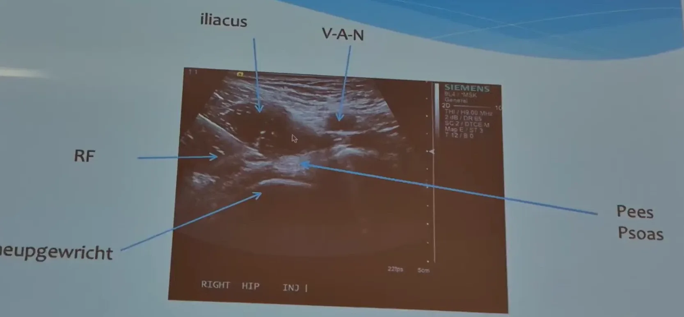

Herkenningspunten op de echo, met de bijschriften zoals ze op het beeld stonden. Bedoeld om een beeld terug te herkennen — niet als beschrijving van hoe je prikt.
Rechterheup. Op de scan staat RIGHT HIP INJ.

De foto zelf blijft onbewerkt; “helderder” verandert alleen hoe hij hier op het scherm getoond wordt. Een foto van een projectiescherm blijft donkerder dan het beeld op de echo zelf.
Er staan nog vier presetregels onder (dB/DR, SC/DTCE, Map/ST, T/B). Die zijn op de foto te onscherp om zonder twijfel over te typen, dus ze staan hier niet — ze zijn wel te zien als je het beeld groter opent.
Per beeld is dit nodig om het toe te voegen: